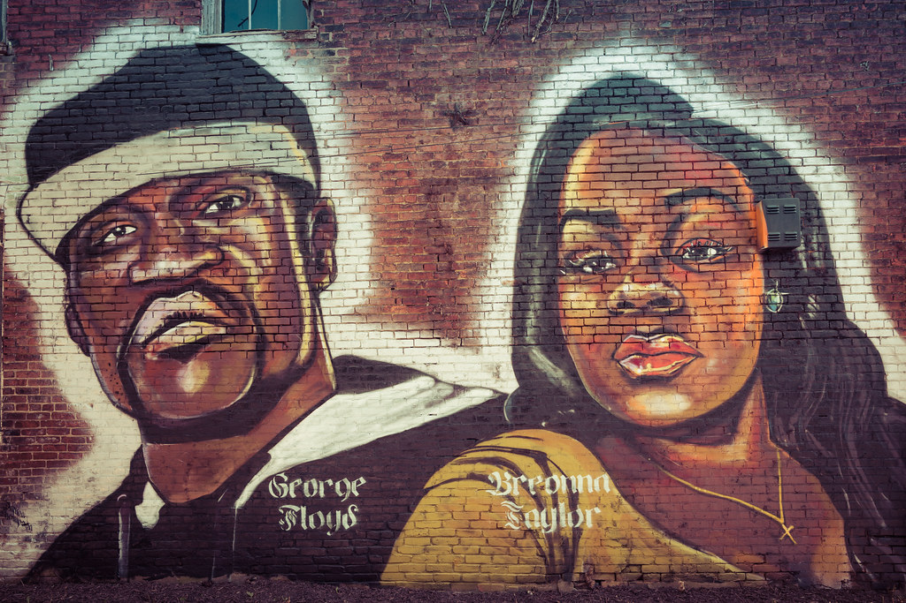

NYPD Police Cars. By Alex Treptower for Pixabay.
The New York Police Department has had a bad history when dealing with minority groups and arresting people of color. However, the trust between the NYPD and New Yorkers was broken following the murder of George Floyd on May 25th, 2020. The killing of Mr. Floyd sparked nationwide protests and highlighted how racial bias drives police work.
Black people, along with Hispanics, are the two racial groups most targeted by the NYPD. The NYPD’s arrests display a snapshot of how minority groups are treated by their local law enforcement.
Data released by the NYPD shows that Black people have been arrested more than any other race in 2021. In each borough, Black people have accounted for 40% or higher of all arrests made. From January to September 2021, 57,011 Black people have been arrested by the NYPD in comparison to the 12,586 White people arrested.
The Black Lives Matter movement was created after the many killings of young Black men by law enforcement. On August 9th, 2014, Micheal Brown, an unarmed Black teenager from Ferguson, Missouri, was shot and killed by police officer Darren Wilson. This shooting was the last straw as tensions rose between the police and the mainly Black population of Ferguson. Protests and riots occurred after Brown’s death, where the Black Lives Matter movement was started.
The Black Lives Matter movement aims to eliminate disproportional injustices. According to Every Black Life Matters,the mission is “to protect black life from conception to death by confronting injustice and deconstructing barriers inside and outside the black community through a national platform of training, networked resources, community organizing and faith-building.” The murders of George Floyd and Breonna Taylor in 2020 brought national attention, once again, to the Black Lives Matter movement.
A mural in Louisville, Ky., depicting George Floyd and Breonna Taylor. By Don Sniegowski for Flickr.
Following the murder of Mr. Floyd, Black Lives Matter protests occurred in cities around the world. These protests mourned the deaths of African-Americans by police officers and highlight the racism they face by police throughout the country. During these protests, police officers used tactics such as kinetic impact projectiles and tear gas to deter protesters, which continued to draw a rift between protesters and police. Sarah Bonesteel, a resident of San Diego who’s trying to open a local Guardian Angels chapter, spoke about the atrocities she witnessed during the Black Lives Matter protests.
“It started off as a peaceful protest, as most Black Lives Matter protests did, then violence ensued. It was like someone flipped a switch.”
She mentioned that violence among protesters began shortly after the police became hostile. “Black people are not the only ones targeted by police. Hispanics are too-especially in a majority-Hispanic community such as San Diego. Everyone could tell that the message behind these protests really resonated with them.”
Bonsteel’s statement reflects the data published by the NYPD. Black men and women account for 50% of all arrests by the NYPD, while Hispanics account for about 25% of the NYPD’s arrests this year.
These protests raised awareness about how certain minority groups are arrested far more than other groups. According to the U.S. Bureau of Justice, Black adults are 5.9 times as likely to be incarcerated than whites and Hispanics are 3.1 times as likely. This data is reflected in the NYPD’s arrests for 2021, where Hispanic and Black people are arrested more than other racial groups.
The NYPD has a racist past, not only with citizens but within the department as well. Earlier this year, two NYPD officers and a retired colleague were arrested with connections to a corruption probe. Robert Smith, 44, who retired in March, allegedly sent text messages about how much he enjoys shooting Black people. According to a government memo, Smith wrote "Bro, I point my gun out the window now at (N-words) and watch their reaction and drive away. Hilarious."
This isn’t the first time that an officer has targeted minority groups. Police officers have been targeting minorities throughout their history, not just the New York Police Department. There is an extreme discrepancy between the number of deaths by police between White and Black people. As stated in the Washington Post, although Black Americans account for less than 13 percent of the United States’ population, Black Americans are killed by police officers more than twice as much as White Americans. In 2020, 1,021 people were killed by police officers in comparison to the 865 in 2021. Due to the events of 2020, tensions were high between the police and U.S. citizens, which explains why the number was slightly higher than 2021.
In order to lessen tensions between the Black community and the police, Bonesteel believes it is important that police officers listen to the wants and needs of each community, instead of looking at the issue on a national level. “Community policing and grassroots organizations are key to head in the right direction and end the disproportionate amount of Black deaths by police officers. In order to open a chapter of Guardian Angels in San Diego, I must be in close contact with local law enforcement.” She continues to emphasize the importance of working with local police in order to decrease the number of fatal police shootings. “That’s what it’s all about, working with law enforcement to better our communities. However, police must stop using racial biases when approaching citizens. This is why so many people are dying.”